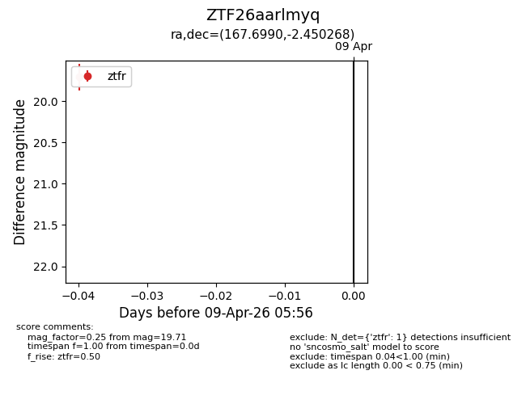
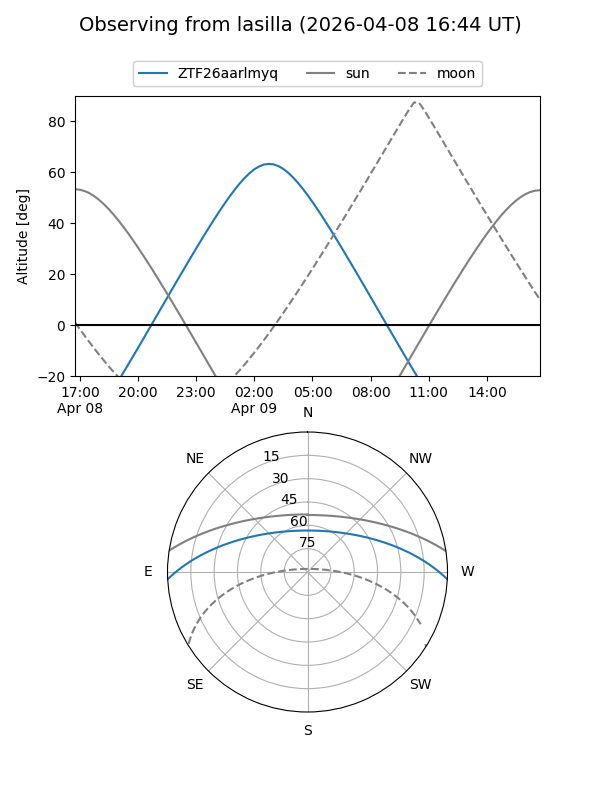
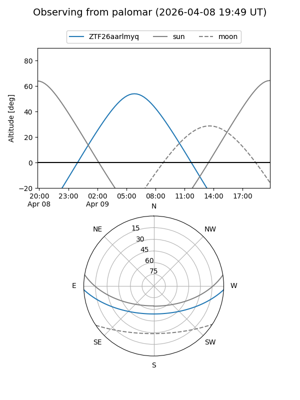

ZTF26aarlmyq
Target ZTF26aarlmyq at 2026-04-09 06:05
Aliases and brokers:
FINK: link
Lasair: link
ALeRCE: link
alt names
ZTF26aarlmyq (ztf,fink_ztf)
Coordinates:
equatorial (ra, dec) = 167.6990,-2.45027
equatorial (HMS+DMS) = 11:10:47.77,-02:27:00.96
galactic (l, b) = (259.6092,+51.74990)
Flags:
Photometry:
last ztfr=19.71
1 ztfr detections
Lightcurve

Visibility


Additional plots